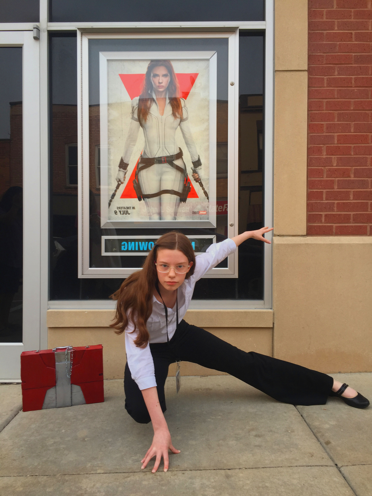

Image 1

Image flipped, saturation adjusted.
Image 2
Image flipped, cropped, saturation adjusted, elements erased via clone
stamp tool.
Image 3
Image rotated to fit assignment criteria.
Image 4
Saturation adjusted, edges cleaned up via clone stamp tool.
Image 5
Image cropped, elements refined via clone stamp tool.